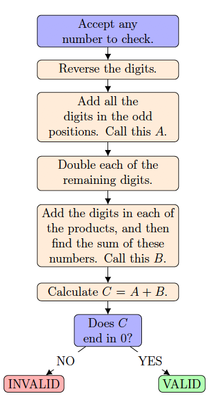

Problem
Debit and credit cards contain account numbers which consist of many digits. When purchasing items online, you are often asked to type in your account number. Because there are so many digits, it is easy to type the number incorrectly. The last digit of the number is a specially generated check digit which can be used to quickly verify the validity of the number. A common algorithm used for verifying numbers is called the Luhn Algorithm. A series of operations are performed on the number and a final result is produced. If the final result ends in zero, the number is valid. Otherwise, the number is invalid.
The steps performed in the Luhn Algorithm are outlined in the flowchart below. Two examples are provided.

Example 1:
Number: \(135792\)
Reversal: \(\textcolor{red}{2}9\textcolor{red}{7}5\textcolor{red}{3}1\)
\(\begin{aligned} A&=\textcolor{red}{2+7+3}\\ &=12\\ \end{aligned}\)
\(\begin{aligned} 2\times9&=18\\ 2\times5&=10\\ 2\times1&=2\\ \end{aligned}\)
\(\begin{aligned} B&=(1+8)+(1+0)+2\\ &=9+1+2\\ &=12\\ \end{aligned}\)
\(C=12+12=24\)\(C\) does not end in zero.
The number is not valid.
Example 2:
Number: \(1357987\)
Reversal: \(\textcolor{red}{7}8\textcolor{red}{9}7\textcolor{red}{5}3\textcolor{red}{1}\)
\(\begin{aligned} A&=\textcolor{red}{7+9+5+1}\\ &=22\\ \end{aligned}\)
\(\begin{aligned} 2\times8&=16\\ 2\times7&=14\\ 2\times3&=6\\ \end{aligned}\)
\(\begin{aligned} B&=(1+6)+(1+4)+6\\ &=7+5+6\\ &=18\\ \end{aligned}\)
\(C=22+18=40\)
\(C\) ends in zero.
The number is valid.
Suppose the number \(4633\,RT0R\,481\) is a valid number when verified by the Luhn Algorithm, where \(R\) and \(T\) are each integers from 0 to 9 such that \(R\le T\).
Determine all possible values of \(R\) and \(T\).
Solution
When the digits of the number are reversed the resulting number is \(184\,R0TR\,3364\). The sum of the digits in the odd positions is \(A=1+4+0+R+3+4=12+R\).
When the digits in the remaining positions are doubled, the following products are obtained: \[2\times 8=16;~ 2\times R=2R;~ 2\times T=2T;~2\times 3=6;~ \text{ and }2\times 6=12\]
Let \(x\) represent the sum of the digits of \(2R\) and \(y\) represent the sum of the digits of \(2T\). When the digit sums from each of the products are added, the sum is: \[B=(1+6)+x+y+6+(1+2)=7+x+y+6+3=x+y+16\]
\(C\) is the sum of \(A\) and \(B\), so \(C=12+R+x+y+16=28+R+x+y\).
When an integer from 0 to 9 is doubled and the digits of the product are added together, what are the possible sums which can be obtained?
| Original Digit (\(R\) or \(T\)) | \(0\) | \(1\) | \(2\) | \(3\) | \(4\) | \(5\) | \(6\) | \(7\) | \(8\) | \(9\) |
|---|---|---|---|---|---|---|---|---|---|---|
| Twice the Original Digit (\(2R\) or \(2T\)) | \(0\) | \(2\) | \(4\) | \(6\) | \(8\) | \(10\) | \(12\) | \(14\) | \(16\) | \(18\) |
| The Sum of the Digits of \(2R\) or \(2T\) (\(x\) or \(yxyxRTy0\) | \(2\) | \(4\) | \(6\) | \(8\) | \(1\) | \(3\) | \(5\) | \(7\) | \(9\) |
Since the number is valid, \(C=28+R+x+y\) must end in zero.
What are the possible values to consider for \(C\)? Since the maximum value for each of \(R\), \(x\), and \(y\) is 9, the maximum value for \(R+x+y\) is \(27\) and the maximum value for \(C=28+R+x+y\) is 55. It follows that the only valid possibilities for \(C\) that end in zero are 30, 40, and 50. We will consider each of the three possibilities.
\(C=30\) and \(R+x+y=2\)
If \(R=0\), then \(x=0\), \(y=2\) and \(T=1\).
There are no other valid possibilities for \(R\) so that \(R+x+y=2\).Therefore, this case produces one valid possibility for \((R,T)\): \((0,1)\).
\(C=40\) and \(R+x+y=12\)
\(R\) \(x\) \(y=12-R-x\) \(T\) Valid or Invalid \((R,T)\) \(0\) \(0\) \(12\) not valid, \(y>9\) \(1\) \(2\) \(9\) \(9\) valid, \(R\le T\) \((1,9)\) \(2\) \(4\) \(6\) \(3\) valid, \(R\le T\) \((2,3)\) \(3\) \(6\) \(3\) \(6\) valid, \(R\le T\) \((3,6)\) \(4\) \(8\) \(0\) \(0\) not valid, \(R> T\) \(5\) \(1\) \(6\) \(3\) not valid, \(R> T\) \(6\) \(3\) \(3\) \(6\) valid, \(R\le T\) \((6,6)\) \(7\) \(5\) \(0\) \(0\) not valid, \(R> T\) \(8\) \(7\) \(-3\) not valid, \(y<0\) \(9\) \(9\) \(-6\) not valid, \(y< 0\) Therefore, this case produces four valid possibilities for \((R,T)\): \((1,9)\), \((2,3)\), \((3,6)\) and \((6,6)\).
\(C=50\) and \(R+x+y=22\)
\(R\) \(x\) \(y=22-R-x\) \(T\) Valid or Invalid \((R,T)\) \(0\) \(0\) \(22\) not valid, \(y>9\) \(1\) \(2\) \(19\) not valid, \(y>9\) \(2\) \(4\) \(16\) not valid, \(y>9\) \(3\) \(6\) \(13\) not valid, \(y>9\) \(4\) \(8\) \(10\) not valid, \(y>9\) \(5\) \(1\) \(16\) not valid, \(y>9\) \(6\) \(3\) \(13\) not valid, \(y>9\) \(7\) \(5\) \(10\) not valid, \(y>9\) \(8\) \(7\) \(7\) \(8\) valid, \(R\le T\) \((8,8)\) \(9\) \(9\) \(4\) \(2\) not valid, \(R>T\) Therefore, this case produces one valid possibility for \((R,T)\): \((8,8)\).
We have examined all possible values for \(C\).
Therefore, there are six valid possibilities for \((R,T)\): \((0,1)\), \((1,9)\), \((2,3)\), \((3,6)\), \((6,6)\) and \((8,8)\).
These correspond to the following six card numbers, which are indeed valid by the Luhn Algorithm:
\(4633\,0100\,481\), \(4633\,1901\,481\), \(4633\,2302\,481\), \(4633\,3603\,481\), \(4633\,6606\,481\), and \(4633\,8808\,481\).